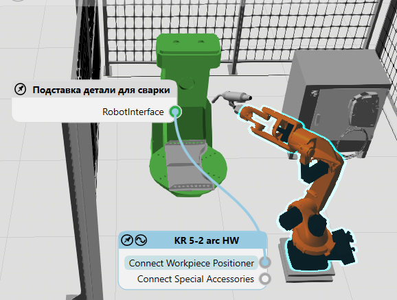

Подключение внешних осей |
|
Робот может быть удаленно подключен к внешним кинематическим компонентам, например, устройствам позиционирования заготовки, с помощью абстрактных интерфейсов. Рабочий процесс подключения внешних осей к роботу аналогичен удаленному подключению компонентов. 1.На вкладке Главная, в группе Соединенить, нажмите Интерфейсы. 2.В 3D-мире выберите робота. 3.В редакторе выбранного робота перетащите порт для импорта соединений из редактора, чтобы создать провод, а затем перетащите этот провод либо на выделенный желтым цветом узел внешнего компонента кинематики, либо на совместимый порт в другом редакторе соединений. В любом случае успешное соединение приводит к тому, что узел во внешнем компоненте кинематики выделяется зеленым цветом, а провод соединяет оба редактора через порты.  |